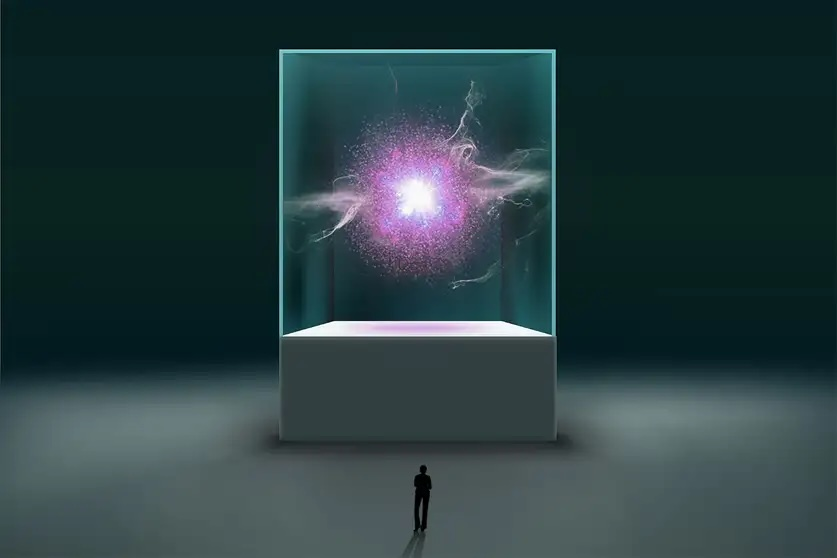
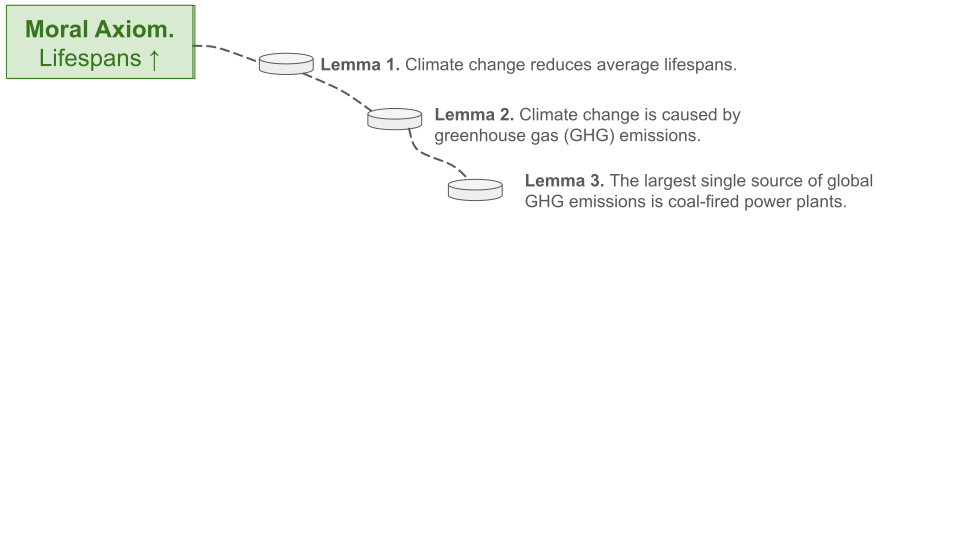

The Problem Problem
Choosing impactful research problems
Scott Jeen
Agenda
- What are problems?
- Identifying problems
- Moral axioms, lemmas, and propositions
- Being the pareto best in the world
- Checking the problem
- Balancing feasiblility and usefulness
- Baselines and oracles
- Takeaways
What are problems?
What are problems?
“A problem is a situation in which we experience conflicting ideas.”
David Deutsch
Open problems: this sudoku
Open problems: this sudoku
Idea (a)

Idea (b)

Open problems: the future UK electricity mix

Open problems: the future UK electricity mix
Idea (a)

Idea (b)

Open problems: a theory of everything
Open problems: a theory of everything
Idea (a)
Idea (b)
Some solutions are better than others
- To solve a problem we incur a cost in exchange for some gain
- Solutions where cost >= gain are zero-sum games
- Solutions where gain > cost are positive-sum games
Zero-sum games
- Chess
- War
- PhD?
Positive-sum games
- Trade
- Innovation/techology
- Environmental conservation
The goal is to find problems where the solutions are maximally positive-sum
Identifying problems
Moral axioms, lemmas and propositions
- Moral axioms. Establish a set of (moral) beliefs that you feel cannot be challenged. E.g.
- All else being equal, increasing one’s happiness is good.
- All else being equal, increasing the average lifespan is good.
- All else being equal, increasing our understanding of the universe is good.
- Lemmas. Published scientific truths you use as stepping stones to connect you to your axiom. E.g.
- Happiness is proportional to wealth until a saturation level
- Climate change reduces average lifespans
- Happiness is proportional to wealth until a saturation level
- Propositions. A problem that, if solved, provides another connection to your axiom.
Moral axioms, lemmas and propositions

Moral axioms, lemmas and propositions

Moral axioms, lemmas and propositions
Moral axioms, lemmas and propositions
Moral axioms, lemmas and propositions

Moral axioms, lemmas and propositions
Moral axioms, lemmas and propositions
Moral axioms, lemmas and propositions
Moral axioms, lemmas and propositions
Moral axioms, lemmas and propositions

Moral axioms, lemmas and propositions: actions
- Think deeply about your moral axioms.
- Read widely to establish the chain of science that maximally affects your moral axiom.
- Establish where the chain of science ends, and propose a way for extending the chain i.e. a problem to solve.
Being the (pareto) best in the world
- If you are the best in the world at something, you are uniquely positioned to see its problems and solve them.
- Some examples:
- Usain Bolt & sprinting
- Beyonce & singing
- Refficiency & sankey diagrams
- It is hard to be the best in the world at something.
- But, it is easy to be the best in the world at several things simultaneously.
Being the (pareto) best in the world

Being the (pareto) best in the world: actions
- Establish what you are pareto best at today
- Use this knowledge to think about the problems that are uniquely accessible to you
- Think about how you can spend your learning tokens to increase the space of problems that are uniquely accessible to you
Balancing feasiblility and usefulness

Baselines and oracles: is your problem really a problem?
- Sometimes you can trick yourself into thinking a problem exists when it doesn’t. A way to ensure this doesn’t happen is to use Baselines and Oracles
- A Baseline is the current best guess at a solution to the problem
- An Oracle is a solution to the problem that relaxes some assumptions/constraints
- For a problem to exist: there must be a gap between the baseline and the oracle
Baselines and oracles: is your problem really a problem?
| Problem | Baseline | Oracle |
|---|---|---|
| Solar PV conversion efficiency ☀️ | 31.25% (Perovskite Tandem Cells) | 33.7% (Shockley-Queisser Limit) |
| Wind conversion efficiency üí® | ~30% (GE Haliade-X) | 59.3% (Betz Limit) |
| Building intelligent machines ü§ñ | GPT-4 | Humans |
| Unifying the four fundamental forces üîé | The Standard Model | The Universe |
Baselines and oracles: is your problem really a problem?
Baselines and oracles: is your problem really a problem?

Baselines and oracles: is your problem really a problem?

Baselines and oracles: is your problem really a problem?

Baselines and oracles: is your problem really a problem?
A theory:
- Progress in the hard sciences is fast because physics provides oracles
- Progress in the social sciences is slow because defining oracles is difficult (sometimes impossible)
Checking the problem: actions
- Think about the problems position on the useful/feasible axis
- Establish a baseline and an oracle for your problem
- If there is no gap between the two, your problem doesn’t exist
- The bigger the gap between the two, the better
Final Takeaways
- We want to work on problems that are maximally positive-sum i.e. their returns to society are much higher than the costs
- Identifying these problems is hard. Some options:
- Moral axioms, lemmas and propositions
- Being the (pareto) best in the world
- Once you’ve selected a problem to work on, make sure:
- It is both feasible and useful
- The problem exists (using baselines and oracles)
Closing remarks
Progress is incremental
- “Quantum leaps” do not happen1
- ChatGPT, (arguably) the most surprising technological advance of the last 15 years, was a combination small advances made over many years
- Don’t be intimidated by the “amount of progress” being made elsewhere
Be courageous
“One of the characteristics of successful scientists is having courage. Once you get your courage up and believe that you can do important problems, then you can. If you think you can’t, almost surely you are not going to.”
Richard Hamming, You and Your Research (1986)